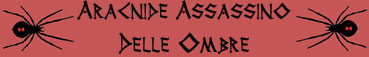
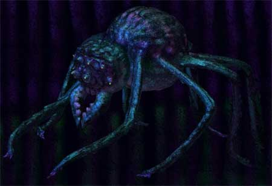

|
 |
Ambiente/Habitat |
Montagne, Colline Temperate (Caverne, Miniere e Sotterranei) |
| Frequenza | Non Comune | |
| Organizzazione | Solitario | |
| Periodo di Attività | Notte (Qualsiasi) | |
| Dieta | Carnivora | |
| Intelligenza | Low intelligence (5) | |
| Punti Combattimento | 8 Punti Combattimento | |
| Tesoro | Vedi Sotto | |
| Allineamento Dominante | Neutrale Malvagio | |
| Numero di Apparizione | 1 (3% di incontrare una coppia) | |
| Classe Armatura | 2 [10 base, 5 corazza, 3 destrezza] | |
| Movimento | 8 esagoni /ragnatele 6 esagoni | |
| Dadi Vita | 5 | |
| Thac0 / Valore di Carica | Thac0 15 / Valore di Carica 13 | |
| Numero di Attacchi | Morso | |
| Danni | 2d4+2 (taglio) | |
| Poteri Offensivi |
Istinto Predatorio; Moderate Lethal Attack; Veleno; |
|
| Poteri Difensivi | Schivata Migliorata; | |
| Poteri Generici |
Nascondersi nelle Ombre Migliorato; Muoversi in Silenzio Migliorato; Scalare Migliorato; |
|
| Vulnerabilità | Nessuna; | |
| Resistenza alla Magia | Nessuna; | |
| Sensi | Infravisione (30 metri), Sensi Superiori | |
| Dimensioni | Medium (1.50 m. di diametro) | |
| Morale | Elite (13) | |
| Valore in Punti Esperienza | 812 |
|
TIRI SALVEZZA DELLA CREATURA |
|||||||
| CORAGGIO | ENERGIA VITALE | MAGIA | MALATTIA | MENTE | RIFLESSI | ROBUSTEZZA | VELENO |
| 0 | 0 | 0 | 0 | 0 | +10% | 0 | +5% |
| 45 | 51 | 59 | 44 | 57 | 41 | 49 | 41 |
Descrizione
L'Aracnide Assassino delle Ombre è un predatore solitario che vive nelle zone di ombra ed in generale dove abbonda l'oscurità. Il suo carapace è sempre di tonalità molto scura andando dal verde scuro al violaceo. Sono dotati di molteplici protuberanze giallastre che appaiono come occhi ma che in realtà sono recettori di impulsi elettrici rilasciati dalle loro vittime. Inoltre, come i pipistrelli, hanno un sistema di rilevamento sonoro. Per tale motivo costoro possono vedere anche nel buio totale (anche all'interno di tenebre magiche) fino ad una distanza di 30 metri. Creature non dotate di impulsi elettrici biologici (si pensi ai non morti ed ai costruiti) saranno viste come oggetti ma non come esseri viventi e possibili prede per cui saranno attaccate solo in caso di necessità.
Combat
A differenza degli altri ragni l'Aracnide Assassino delle Ombre non produce una propria ragnatela, ciò nonostante, la creatura è in grado di muoversi senza difficoltà tra le ragnatele anche se create magicamente (come con la magia Web).
ISTINTO PREDATORIO (Moderate Special Ability): La creatura possiede un forte istinto predatorio, per tale motivo costei riceve un bonus costante di +1 ai suoi tiri per colpire.
MODERATE LETHAL ATTACK [MORSO] (Moderate Special Ability): Questa creatura può utilizzare la manovra di combattimento dei vagabondi Lethal Attack (vedi) ed il danno base prodotto da tale manovra sarà pari a 2d6.
VELENO [MORSO] (Superior Special Ability): Il morso dell'Aracnide Assassino delle Ombre è dotato di un forte veleno paralizzante: Onset 1 round, Effetti 0/Paralizzato (Hold) per 3 rounds, Delay none, Tiro Salvezza -5%, Assuefazione nessuna.
SCHIVATA MIGLIORATA (Moderate Special Ability): La creatura è particolarmente agile. Una volta al round, infatti, la stessa potrà provare a schivare un qualsiasi attacco ricevuto in corpo a corpo da una posizione frontale che non sia di dimensioni superiori a large. La creatura ha il 25% di riuscire a schivare il colpo in arrivo. Questo tiro percentuale va effettuato prima del tiro per colpire effettuato dall'avversario. Se l'avversario effettua un 20 naturale sull'attacco che la creatura era riuscita a schivare lo stesso andrà comunque a segno ma senza conseguenze critiche. Al tiro percentuale andranno applicate le penalità previste per il mantenimento della concentrazione in situazioni di combattimento particolari (come ad esempio incapacitato). La creatura non potrà provare a schivare in alcun caso attacchi a distanza.
NASCONDERSI NELLE OMBRE MIGLIORATO (Moderate Special Ability): Questa creatura è in grado di utilizzare l'abilità dei ladri nascondersi nelle ombre disponendo di una prova base pari al 75%.
MUOVERSI IN SILENZIO MIGLIORATO (Moderate Special Ability): Questa creatura è in grado di utilizzare l'abilità dei ladri muoversi in silenzio disponendo di una prova base pari al 75%.
SCALARE MIGLIORATO (Moderate Special Ability): Questa creatura è in grado di utilizzare l'abilità dei ladri scalare parenti disponendo di una prova base pari al 75%.
Habitat/Society
L'Aracnide Assassino delle Ombre è un essere solitario, può essere incontrato con un rappresentante dell'altro sesso unicamente nel periodo riproduttivo che dura un mese e si ripete ogni tre anni (per simulare questa possibilità si consideri un risultato da 01 a 03 su 1d100). La femmina depone circa una dozzina di uova singolarmente spargendole in antri oscuri e luoghi nascosti in un raggio anche di diversi chilometri. Le uova sono di grandi dimensioni (pesano 10 lbs.) ed il piccolo fuoriesce dalle stesse dopo 30 giorni dalla deposizione già particolarmente aggressivo e pericoloso, differente dall'adulto solo per le sue ridotte dimensioni (1 DV, danni 1d4, modificatore al tiro salvezza del veleno +1, xp 185). Dopo un anno il piccolo ragno raggiunge le dimensioni dell'adulto e la piena maturità sessuale. L'Aracnide Assassino delle Ombre non possiede una vera e propria tana ma si aggira nei luoghi oscuri e nascosti rimanendo nello stesso nascondiglio per breve periodo di tempo per poi cercarne uno nuovo. Quando si trova in superficie questo ragno si sposta di notte cercando un luogo buio dove nascondersi durante le ore del giorno per poi uscire di notte in cerca di prede.
Ecology
L'Aracnide Assassino delle Ombre ha un'indole malvagia ed uccide le proprie prede anche quando non è affamato. Si tratta di una creature particolarmente intelligente per essere un ragno gigante. Per tale motivo, nonostante non disponga di alcuna capacità linguistica (questo ragno comunica sbattendo ritmicamente le proprie mandibole), può essere addestrato se catturato ancora come uovo prima della schiusa (da adulto risulta molto quasi impossibile da addomesticare). Non di rado, infatti, creature della notte e delle profondità (in particolare elfi oscuri) sono soliti utilizzarli come guardiani o propri animali da compagnia. Se smerciate al posto giusto, ogni uovo di Aracnide Assassino delle Ombre può essere, quindi, venduto fino a 500 corone. Questo ragno non accumula tesori ma può accadere di rinvenire sul luogo dell'incontro o nelle immediate vicinanze i resti di una sua precedente vittima con la relativa possibilità di rinvenimento di tesoro come indicata nella seguente tabella:
| % di ritrovamento | TIPOLOGIA | Ammontare ritrovato |
| 15% | Gemme | 1d3 |
| 15% | Monete d'oro | (1d6*(1d3*10))+1d20 |
| 5% | Oggetto magico | 1 1d10: (1-8) common (9-10) rare |
| 12% | Arma | 1 |
| 10% | Armatura | 1 |
Mystical Resource Sourge (Ghiandola Venefica) Quantità: 1, Presenza 20% - Effetto Particolare: Veleno - Qualità della Risorsa: Common.